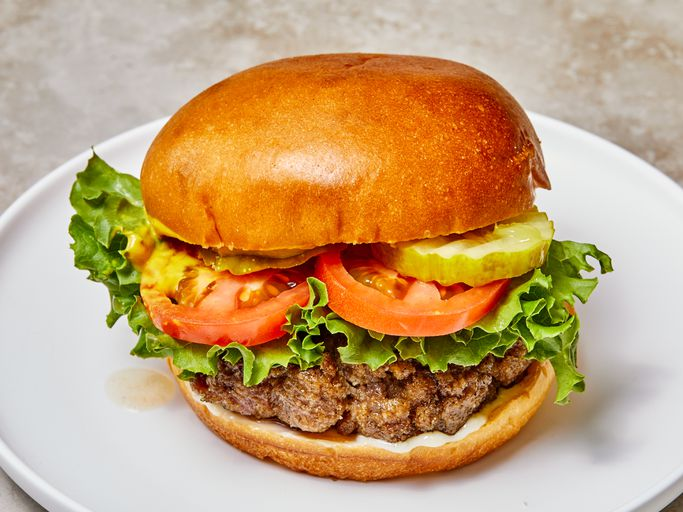

Burguer Recipe!

Juiciest Hamburguers Ever!
No more dry, boring burguers. These are juicy, and spices can be easily added or changed to suit anyone`s taste. If you find the meat texture too mushy, just add more bread crumbs until it forms patties that hold their shape.
Ingredients :
- 2 pounds ground beef
- 1 egg, beaten
- 1 cup of brad crumbs
- 3 tablespoons of evaporated milk
- 2 tablespoons Worcestershire sauce
- 1 teaspoon cayenne pepper
- 2 cloves of garlic, minced
Steps :
- Gather all ingredients.
- Preheat a grill for high heat.
- Mix the ground beef, egg, bread crumbs, evaporated milk, Worcestershire sauce, cayenne pepper, and garlic in a large bowl using your hands.
- Form the mixture into 8 hamburger patties.
- Lightly oil the grill grate. Grill patties until browned and no longer pink, about 5 minutes per side.
- Serve hot and enjoy!